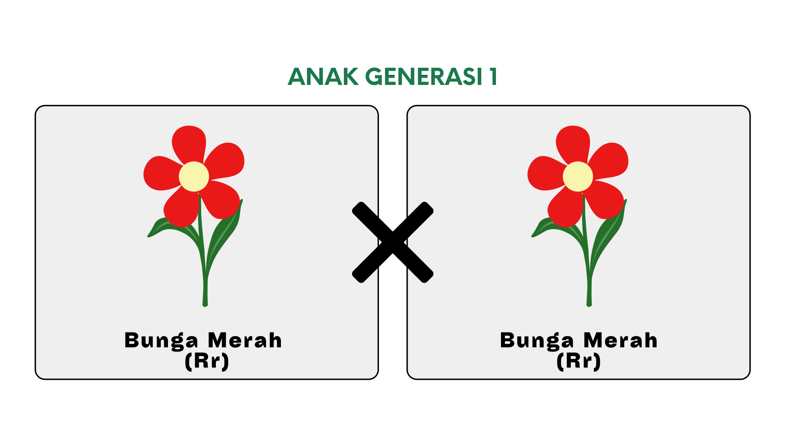

Tes Formatif 1
Tentukan semua hasil yang mungkin dari pelemparan dadu du bawah ini?
Percobaan pelemparan dua buah dadu
S = { (1,1), (1,2), (1,3), (1,4), (1,5), (1,6), (2,1), (2,2), (2,3), (2,4), (2,5), (2,6), (3,1), (3,2), (3,3), (3,4), (3,5), (3,6), (4,1), (4,2), (4,3), (4,4), (4,5), (4,6), (5,1), (5,2), (5,3), (5,4), (5,5), (5,6), (6,1), (6,2), (6,3), (6,4), (6,5), (6,6) }
Tentukan kejadian jumlah mata dadu 6 pada percobaan pelemparan 2 buah dadu?
Tentukan n(S) dari percobaan pelemparan sebuah dadu dan sebuah koin?
Peluang teoritis adalah ...
Tentukan peluang kejadian munculnya bunga putih (genotip rr) pada percobaan persilangan bunga di bawah!
Tentukan peluang kejadian mendapatkan hadiah buku pada percobaan memutar spinner keberuntungan?